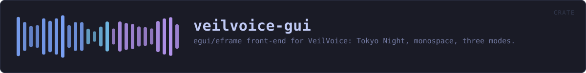

veilvoice-gui
egui/eframe front-end for VeilVoice: Tokyo Night, monospace, three modes.
reference · the same page on GitHub
The VeilVoice desktop application: an egui/eframe front-end, monospace throughout — anonymise a file, scramble a microphone live, watch what is listening, manage the app lock, choose how the app looks, and an about panel that states the honest scope.
The binary lives in main.rs; this library exists so the UI logic can be unit tested without opening a window.
HOW THE CRATE FITS TOGETHER
Every arrow is a crate:: or super:: path one module actually uses, read out of the source rather than drawn by hand.
The same graph as Mermaid source
%%{init: {"theme":"base","themeVariables":{"background":"#1a1b26","primaryColor":"#1f2335","primaryTextColor":"#c0caf5","primaryBorderColor":"#7aa2f7","secondaryColor":"#16161e","tertiaryColor":"#16161e","lineColor":"#565f89","textColor":"#c0caf5","mainBkg":"#1f2335","nodeBorder":"#7aa2f7","clusterBkg":"#16161e","clusterBorder":"#2f3549","fontFamily":"ui-monospace, SFMono-Regular, Consolas, monospace","fontSize":"14px"}}}%%
flowchart TD
n_lib(["lib.rs<br/>25 lines"])
n_main(["main.rs<br/>40 lines"])
n_app["app.rs<br/>986 lines"]
n_prefs["prefs.rs<br/>386 lines"]
n_reduced_motion["reduced_motion.rs<br/>273 lines"]
n_security["security.rs<br/>1030 lines"]
n_settings["settings.rs<br/>618 lines"]
n_soundbar["soundbar.rs<br/>349 lines"]
n_theme["theme.rs<br/>650 lines"]
n_app --> n_security
n_app --> n_settings
n_app --> n_soundbar
n_app --> n_theme
n_prefs --> n_theme
n_security --> n_theme
n_settings --> n_prefs
n_settings --> n_reduced_motion
n_settings --> n_soundbar
n_settings --> n_theme
n_soundbar --> n_prefs
n_soundbar --> n_themeThis site loads no third-party script, so it cannot run Mermaid; the diagram above is the same nodes and edges drawn by the generator instead. GitHub renders the source below directly.
THE FILES
| File | Lines | What it is |
|---|---|---|
app.rs | 986 | The VeilVoice desktop application. |
lib.rs | 25 | The VeilVoice desktop application: an egui/eframe front-end, monospace throughout — anonymise a file, scramble a microphone live, watch what is listening, manage the app lock, choose how the app looks, and an about panel that states the honest scope. |
main.rs | 40 | VeilVoice desktop application entry point. |
prefs.rs | 386 | What the user has chosen about how the app looks and moves. |
reduced_motion.rs | 273 | Whether the operating system has been asked to reduce motion. |
security.rs | 1030 | The application lock, and the at-rest encryption of what VeilVoice writes. |
settings.rs | 618 | The settings panel: a menu of pages, each a titled group of choices. |
soundbar.rs | 349 | The animated mark: a row of bars that rise and fall. |
theme.rs | 650 | Colour schemes for the desktop app. |